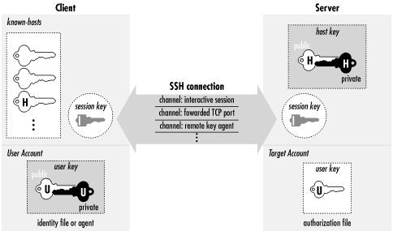

3.3. The Architecture of an SSH System
SSH
has about a dozen distinct, interacting components that produce the
features we've covered. [
Section 3.1, "Overview of Features"]
Figure 3-1 illustrates the major components and their
relationships to one another.

Figure 3-1. SSH architecture
By "component" we don't necessarily mean
"program:" SSH also has keys, sessions, and other fun
things. In this section we provide a brief overview of all the
components, so you can begin to get the big picture of SSH:
- Server
- A program that allows incoming SSH connections to a machine, handling
authentication, authorization, and so forth. In most Unix SSH
implementations, the server is sshd.
- Client
- A program that connects to SSH servers and makes requests, such as
"log me in" or "copy this file." In SSH1,
SSH2, and OpenSSH, the major clients are ssh and
scp.
- Session
- An ongoing connection between a client and a server. It begins after
the client successfully authenticates to a server and ends when the
connection terminates. Sessions may be interactive or batch.
- Key
- A relatively small amount of data, generally from tens to one or two
thousand bits, used as a parameter to cryptographic algorithms such
as encryption or message authentication. The use of the key binds the
algorithm operation in some way to the key holder: in encryption, it
ensures that only someone else holding that key (or a related one)
can decrypt the message; in authentication, it allows you to later
verify that the key holder actually signed the message. There are two
kinds of keys: symmetric or secret-key, and asymmetric or public-key.
[Section 3.2.2, "Public- and Secret-Key Cryptography"] An asymmetric key has two parts: the
public and private components. SSH deals with four types of keys, as
summarized in Table 3-1 and described following
the table.
Table 3-1. Keys, Keys, Keys
|
Name |
Lifetime |
Created by |
Type |
Purpose |
|
User key |
Persistent |
User |
Public |
Identify a user to the server |
|
Session key |
One session |
Client (and server) |
Secret |
Protect communications |
|
Host key |
Persistent |
Administrator |
Public |
Identify a server/machine |
|
Server key |
One hour |
Server |
Public |
Encrypt the session key (SSH1 only) |
- User key
- A persistent, asymmetric key used by clients as proof of a
user's identity. (A single user may have many keys/identities.)
- Host key
- A persistent, asymmetric key used by a server as proof of its
identity, as well as by a client when proving its host's
identity as part of trusted-host authentication. [Section 3.4.2.3, "Trusted-host authentication (Rhosts and RhostsRSA)"] If a machine runs a single SSH server, the
host key also uniquely identifies the machine. (If a machine is
running multiple SSH servers, each may have a different host key, or
they may share.) Often confused with the server key.
- Server key
- A temporary, asymmetric key used in the SSH-1 protocol. It is
regenerated by the server at regular intervals (by default every
hour) and protects the session key (defined shortly). Often confused
with the host key. This key is never explicitly stored on disk, and
its private component is never transmitted over the connection in any
form; it provides "perfect forward secrecy" for SSH-1
sessions. [Section 3.4.1, "Establishing the Secure Connection"]
- Session key
- A randomly generated, symmetric key for encrypting the communication
between an SSH client and server. It is shared by the two parties in
a secure manner during the SSH connection setup, so that an
eavesdropper can't discover it. Both sides then have the
session key, which they use to encrypt their communications. When the
SSH session ends, the key is destroyed.
TIP:
SSH-1 uses a single session key, but SSH-2 has several: each
direction (server to client, and client to server) has keys for
encryption and others for integrity checking. In our discussions we
treat all SSH-2's session keys as a unit and speak of
"the session key" for convenience. If the context
requires it, we specify which individual key we mean.
- Key generator
- A program that creates persistent keys (user keys and host keys) for
SSH. SSH1, SSH2, and OpenSSH have the program
ssh-keygen.
- Known hosts database
- A collection of host keys. Clients and servers refer to this database
to authenticate one another.
- Agent
- A program that caches user keys in memory, so users needn't
keep retyping their passphrases. The agent responds to requests for
key-related operations, such as signing an authenticator, but it
doesn't disclose the keys themselves. It is a convenience
feature. SSH1, SSH2, and OpenSSH have the agent
ssh-agent, and the program
ssh-add loads and unloads the key cache.
- Signer
- A program that signs hostbased authentication packets. We explain
this in our discussion of trusted-host authentication. [Section 3.4.2.3, "Trusted-host authentication (Rhosts and RhostsRSA)"]
- Random seed
- A pool of random data used by SSH components to initialize software
pseudo-random number generators.
- Configuration file
- A collection of settings to tailor the behavior of an SSH client or
server.
Not all these components are required in an implementation of SSH.
Certainly servers, clients, and keys are mandatory, but many
implementations don't have an agent, and some even don't
include a key generator.
 |  |  |
| 3.2. A Cryptography Primer |  | 3.4. Inside SSH-1 |